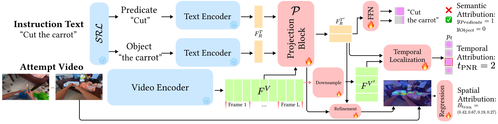

Method
MisEngine: Data Engine
A significant challenge in mistake video analysis is the paucity of available data in the face of massive diversity of possible mistakes. MisEngine overcomes this by automatically creating new mistake understanding datasets from source corpora through a careful series of sampling and cross-matching methods. It uses Semantic Role Labeling on the text instruction and then matches across the available roles (e.g., Object and Predicate), systematically cross-matching an instruction text with descriptions of other action videos to create misaligned pairs. Videos naturally inherit temporal and spatial annotations that we process into the corresponding attribution targets. Applied to Ego4D and EPIC-KITCHENS, MisEngine yields Ego4D-M (257K samples) and EPIC-KITCHENS-M (221K samples)—at least two orders of magnitude larger than any existing mistake dataset.

MisFormer: Model Architecture
MisFormer jointly processes the instruction text and an attempt video, extracting shared multimodal features. Three specialized transformer heads perform semantic attribution (detecting misaligned roles), temporal localization (pinpointing the Point-of-No-Return frame), and spatial localization (predicting mistake regions via attention-driven bounding boxes), enabling comprehensive and interpretable mistake analysis across semantic, temporal, and spatial dimensions. At inference, the temporal and spatial modules are gated—invoked only when any role is predicted as Mistake.
